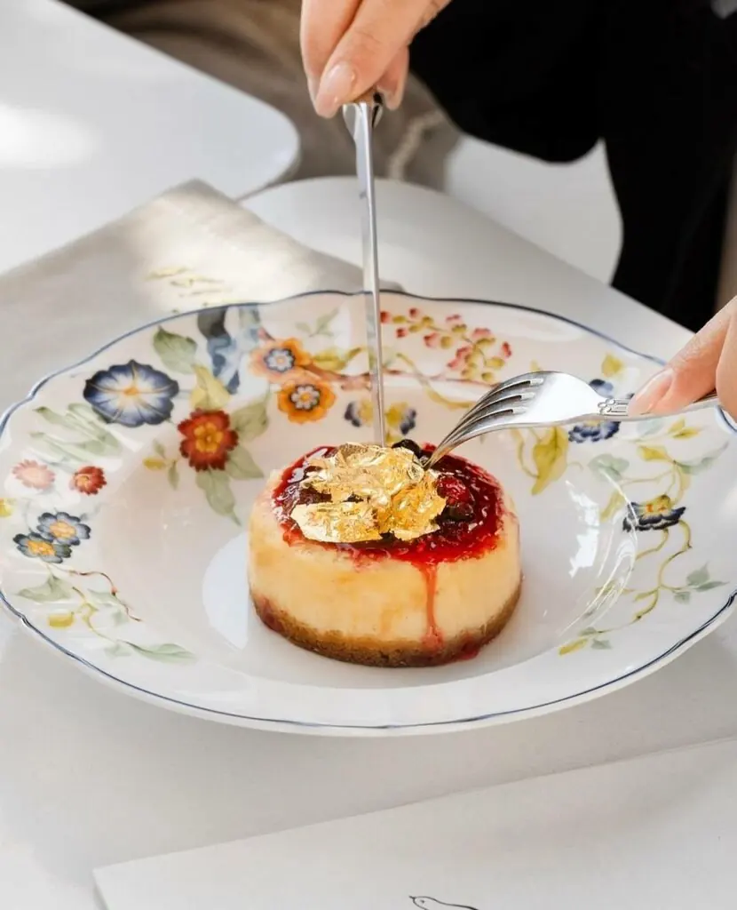
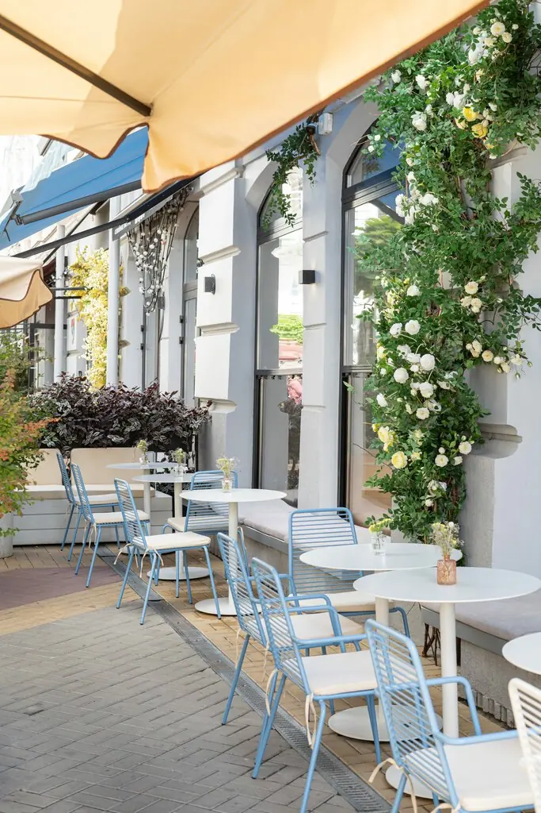
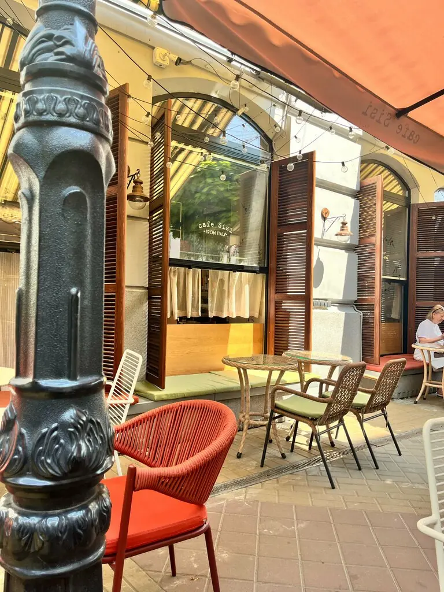
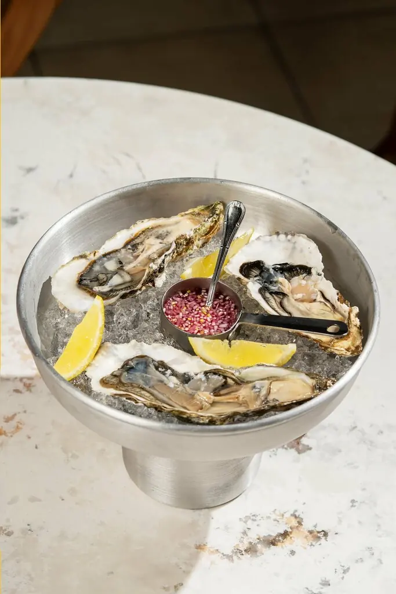
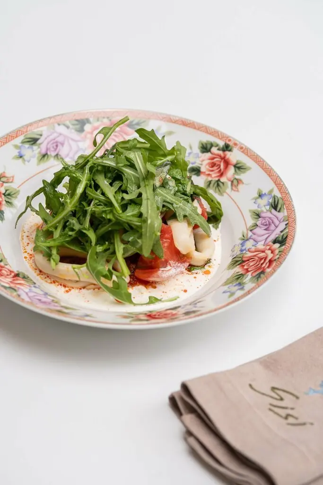
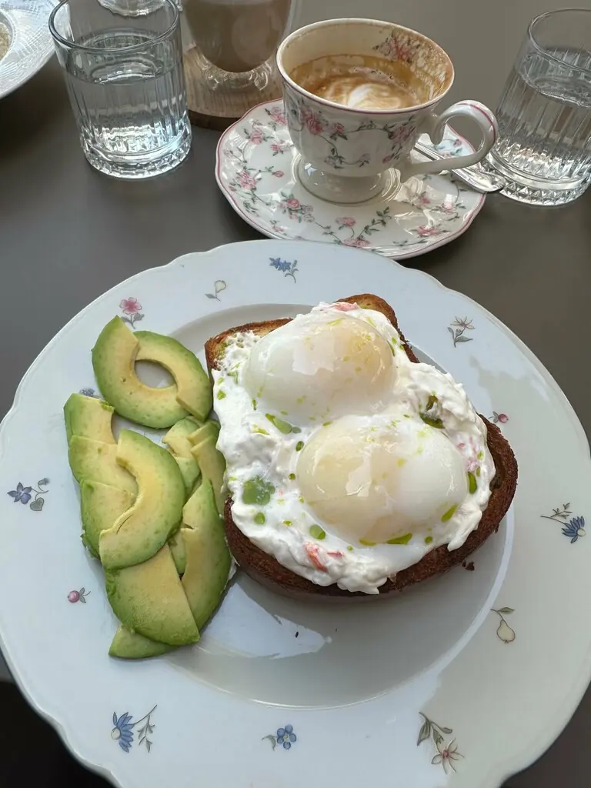
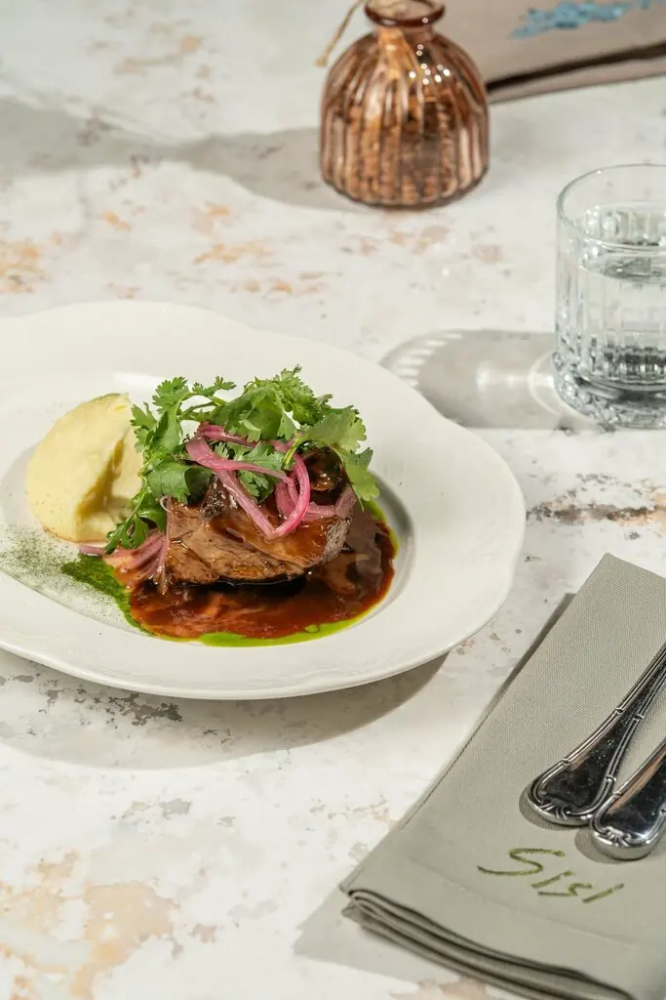

Завтрак,
паста,
вино.
Маленькое бистро на Соборном: фарфор в цветочек, веранда в розах и всего около 30 мест.

На веранде оставляют частичку души
Так написала гостья, и мы не спорим. Можно прийти с собакой, с детьми или одной с книгой к первому кофе.





Паста с крабом и трюфельным соусом — это любовь с первого вкуса и взгляда.Елизавета Рузавина
Раз в неделю сюда заглядываю на завтрак и ни разу не разочаровали.Карина Гриханова
Дети ели и улыбались, никаких капризов.Даниил Фаткуллин
Столиков мало
АдресРостов-на-Дону, Соборный переулок, 22
ЧасыПн–чт и вс 10:00–23:00
Пт, сб 10:00–00:00
Пт, сб 10:00–00:00
Телефон+7 988 253-33-83